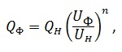

Содержание
Полезная информация для наладки
Расчет мощьности радиаторов
где
Qф, Qн - Фактическая и нормативная тепловые мощности, Вт
Uф, Uн - Фактический и нормативный температурные напоры
n = 1.15
Температурный напор
\(t_п\) - температура подающего теплоносителя
\(t_о\) - температура обратного теплоносителя
\(t_в\) - температура воздуха в помещении
Расход воды от Вт
1.163 - теплоемкость воды если надо найти л\ч
1163 - теплоемкость воды если надо найти т\ч
\(t_з\) - разница температур между подающим и обратным трубопроводом прибора
Расход воды от Гкал
\(Q_{о.р}\) - расчетный расход теплоты на систему отопления Гкал/ч
\(t_{1р}\) и \(t_{2р}\) - расчетные температуры воды в подающем и обратном трубопроводе системы отопления
ЭКМ
ЭКМ - эквивалентный квадратный метр
Характериистики ЭКМ:
Ккал |
Вт |
Температура подачи |
Температура обратки |
Температура воздуха |
|---|---|---|---|---|
435 |
506 |
95 |
70 |
18 |
Расчет теплопотребления здания
a - поправочный коэффициент (Апарцев таблица П2.4 стр. 73)
\(q_o\) - отопительные характеристики здания (Апарцев приложение 2 табл. 2.1)
V - объем здания
\(t_{в.р}\) - расчетная температура воздуха в помещении
\(t_{н.р.о}\) - расчетная температура наружного воздуха (Апарцев приложение 1)